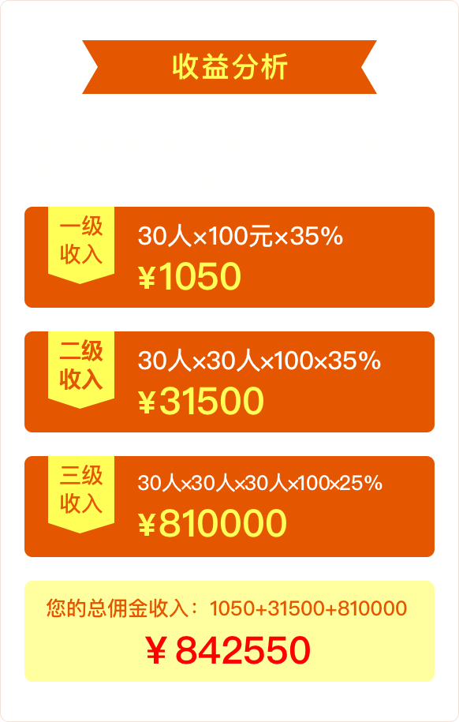

益多米是什么？
益多米是新型社交电商购物平台，为广大消费者提供玲琅满目的优质商品，满足大家消费需求的同时，采用三级分销的模式，让消费者转变为消费商，通过分销商品赚取佣金。
益多米平台的佣金制度
益多米累计消费金额满98元（不包含运费），将自动升级为“米商”。

益多米的锁粉规则
任何人第一次点击你的推广链接即自动锁定他为你的客户，只要被你锁定的客户在益多米消费，你都可以获得相应的佣金啦。当然，被你锁定的客户也是可以介绍他的伙伴来购买益多米的商品的，这样你还是会有佣金拿哦，在益多米平台，你可以锁定三层的客户，他们都是你团队的伙伴，帮助你赚取佣金。
甜玉米用户，属于米商吗？
开通甜玉米后，将同时开通益多米平台的账号，成为益多米的消费者，如果您希望升级为益多米的米商，获取分销商品权利，赚钱佣金，您需要在益多米平台累计消费金额达到98元，这样您的账号就会自动升级为“米商”啦。
为什么益多米平台产品这么少？
益多米的商品太少，那是因为您知道的太早。也就是说，您是最早一批接触到新型社交电商平台的伙伴！随着后期益多米的商家不断入驻，商品不断丰富，相信那时的您，已经是身价不菲啦！现在是要购物满98元就可以获取米商资格，代理益多米所有的商品，不用投资，没有员工，无需管理，您只需要推广就可以赚取意想不到的佣金！
如何查看分销佣金？
查看分销佣金，可点击益多米下面功能栏中的“米商”，进入后就可以查看您的佣金情况，以及佣金明细啦！
如何查看我的米客？
查看米客详情，可点击益多米下面功能栏中的“米商”，在“我的米客”一栏中可以查看各级米客的情况，点击各级米客上方对应的数字可以获取米客的人脉资源。
退货后，佣金如何计算？
退货成功后，退货相关单品佣金也将随之取消，需要再次购买其他商品方可获得返佣。
佣金提现问题
佣金是可以随时申请提现，提现金额将在三天内到达您提供的银行卡内，请注意查收。
售后联系谁？
售后买家可以与商家进行联系协商处理，无法协商处理可以联系平台客服协助处理。
如何申请退货？
买家如需退货，请在收到货7天内（以快递签收时间为准，过期无效），联系卖家提供退货信息。退货成功后此单品佣金也将随之取消，需要再次购买其他商品方可获得返佣。
可以换货吗？
益多米平台是不提供换货服务的，请在购买前看清产品信息或与商家沟通清楚再下单购买。若您觉得商品不喜欢，请直接申请退货。
下单后多久发货？
商家将在买家付款后的72小时内安排发货，并尽量争取提前发货。
哪些情形下不符合7天无理由退货？
1.超过快递签收日起七天外（以快递公司的送货单签收日期为准）；
2.人为造成商品质量问题，或影响二次销售；
退货时运费谁来承担？
1.因商品自身质量问题、错发/漏发、收到商品与描述不符，或商品破损引起的退货，退货时运费由商家承担。寄回退货商品时，请事先与商家沟通好退货信息，选择普通快递并预付快递费用，商家收到退货商品后会连同寄回运费一并退款；
2.因个人原因产生的退货，退货运费由个人承担；
3.因拒签或收件地址错误等个人原因导致的派件失败，来回运费将由个人承担；
钱退到哪？申请退货后什么时候退款？
商家将于收到退货商品3天内办理退款，退款会在1个工作日自动退回买家的微信钱包。
如商家拒绝正当理由退货怎么办？
如发生上述情况，请联系益多米平台客服申诉，最终判定结果将以益多米告知的裁定结果为准；
益多米平台交易属于担保交易吗？
益多米平台的交易均属于担保交易，买家确认收货后，卖家和米商会分别收到相应的货款和佣金。
益多米平台的佣金制度是怎么样的?
益多米累计消费金额满98元（不包含运费），将自动升级为“米商”。